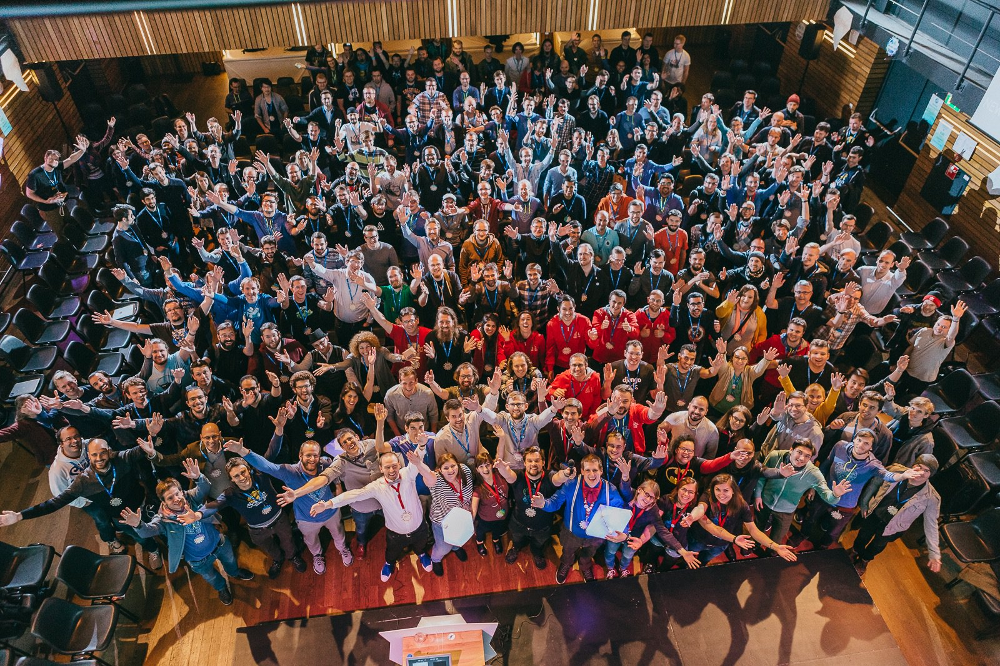

This was the third edition of the Django: Under The Hood (DUTH) conference. Two days of awesome talks and two days of sprints. The conference was organised by members of the Django community, including several members of the Django core team, and in association with the Dutch Django Association.
The conference was great! It was my first time in a DUTH conference and also my first time in Amsterdam, so it was quite an experience for me! I’m writing this post to share a little bit of what happened there.
About the Conference

Picture by Bartek Pawlik: https://500px.com/photo/181370473/group-photo-at-django-under-the-hood-2016-by-django-under-the-hood
Over 300 Djangonauts. Stellar organization. Nine great talks. Two days of sprints. Awesome venue. Very healthy and friendly community. You could feel the excitement and enthusiasm of everyone participating in the conference. This was quite a surprise for me! Because the parameter of comparison I had was previous academic conferences I’ve attended – and they are far from being that fun :-)
In the first day we had three talks, starting by Andrew Godwin presenting the underlyings of Channels and discussing about the Django specific implementations.
Ana Balica talked about testing in Django, she presented how the testing framework have evolved since Django 1.0, how the testing framework works under the hood and gave some great insights and tips about extra resources to increase the quality of the tests.
The last talk of the first day was presented by Aymeric Augustin, he talked about debugging performance, both on front
end and backend, tackling performance issues related to CSS, JS and much more. In the backend, he talked about the
implications of the ORM and gave some insights on the differences between select_related and prefetch_related and
also on other ORM related optimizations.
The second day started with a keynote by Jennifer Akullian from Keen.io. She talked about mental health in tech. It’s a very big and serious topic. Many developers worldwide are working way too much and experiencing burnouts, and we are not talking about it.
Loïc Bistuer talked about Django Validation, exploring the main concerns of data validation, such as enforcement, user experience, performance and convenience. He also talked about the different approach to validate user input.
Idan Gazit is a software developer from Heroku, and gave a presentation about the modern JavaScript. He talked about how to work with the newest JavaScript versions, discussed about frameworks, packaging, orchestration and deployment.
Custom Database Backends was the next topic, presented by Michael Manfre. He works at Microsoft and is one of the maintainers of the django-mssql package, which is a third-party database backend to support Microsoft SQL Server. He talked about the challanges to implement a custom database backends and shared his experience implementing the Microsoft SQL Server backend for Django.
Nadia Eghbal tackled the challanges of funding open source. She highlight how tough it is and how different it is from other types of funding, such as startup funding, academic funding, etc. The problem is not only with the money itself but also with the access to the money. Right now many open source funding happens ad hoc, such as crowdfunding, bouties, tipping, but none of them are sustainable.
Finally, the last talk was about Django at Instagram, presented by Carl Meyer, a Django Core developer and Instagram employee. He talked how Django was important for the Instagram growth and how it is still used today. He shared some very impressive numbers, such as 95 million photos and videos are uploaded every day, handling up to 4.2 billion likes every day. In total, their database holds more than 2.3 trillion likes in total. To do that, Instagram have tens of thousands Django servers running. He talked about the evolution of Instagram and some fun facts on how they migrated from Django 1.3 to Django 1.8.
Talks
Below you can find all the nine talks that happened in the DUTH conference in the first two days.
It was a unique experience. The talks were great. For the next weeks I will try to summarize some of the contents from the talks and write it down in form of posts here in the blog, so we can explore together some of the topics and learn more about it!
Some extra links:
 How to Extend Django User Model
How to Extend Django User Model
 How to Setup a SSL Certificate on Nginx for a Django Application
How to Setup a SSL Certificate on Nginx for a Django Application
 How to Deploy a Django Application to Digital Ocean
How to Deploy a Django Application to Digital Ocean